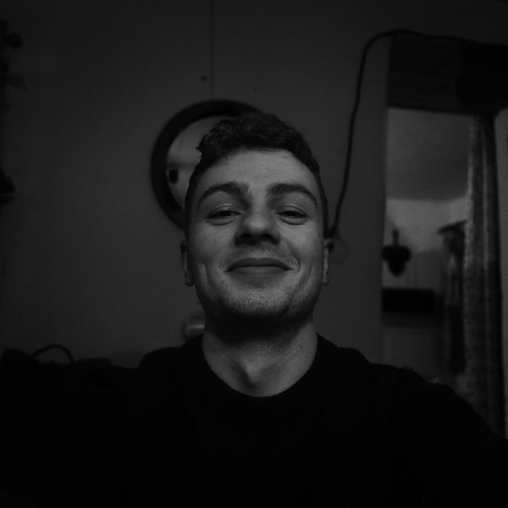

TĚŠÍ MĚ
Ahoj, já jsem Patrik! Jsem student a fotograf. Od malička rád zachycuju okamžiky a příběhy, ať už skrze fotky, nebo filmy.
Focení miluju, ale není to, a pravděpodobně nikdy nebude, moje hlavní kariéra. Já to tak ani nechci. Nejvíc mě to naplňuje, když to dělám pro sebe. Pokud fotím něco i pro někoho jiného, tak to je proto, že zrovna opravdu chci.
Každý pes, jiná ves. Tak bych popsal svůj styl. Fotím všechno a všude. Z mého portfolia jako celku je ale poznat, že mám rád barvy, kontrast a jednoduché kompozice.